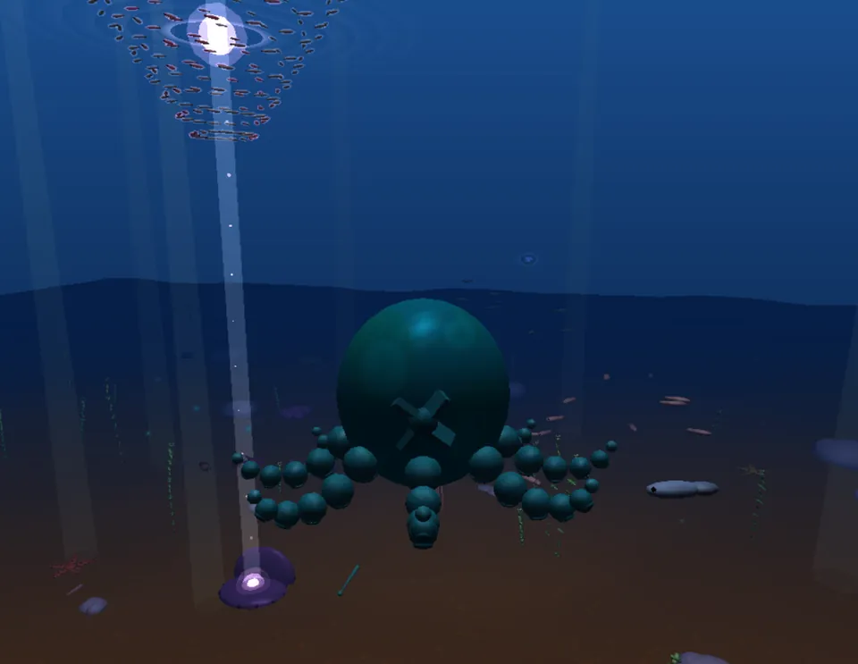
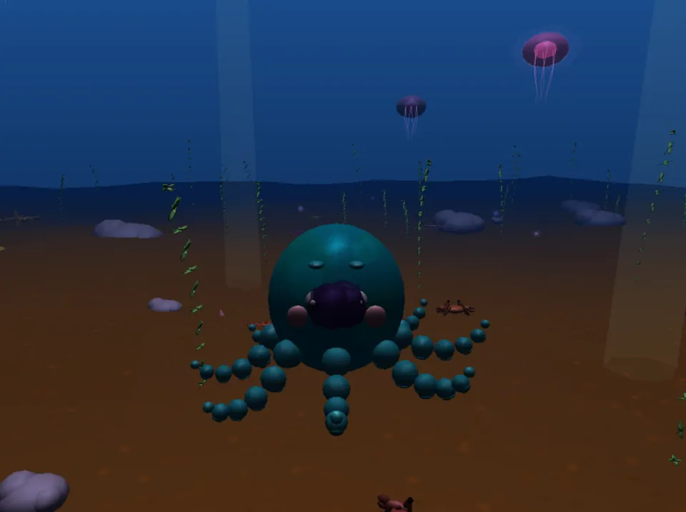
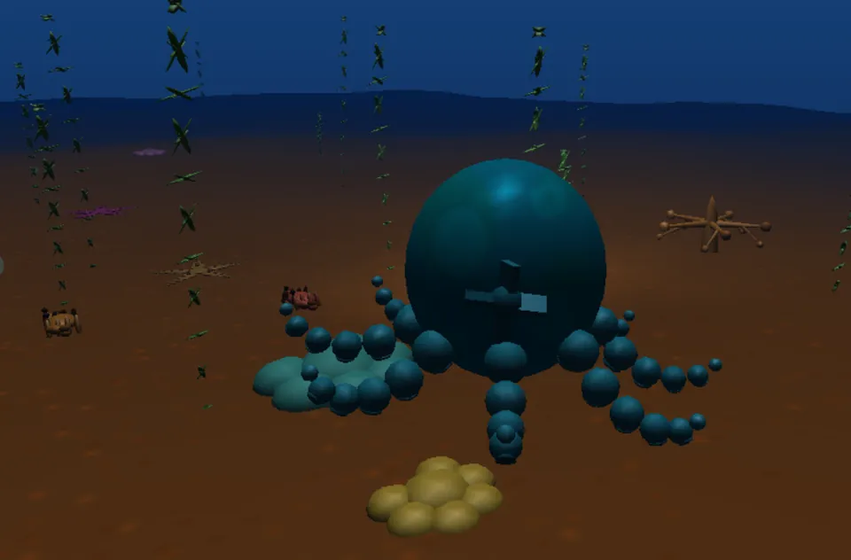
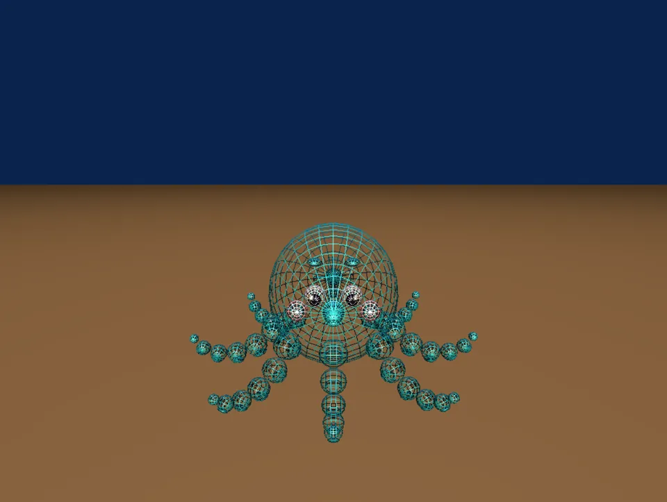

Underwater World
Underwater scenes built from scratch in C and OpenGL, with no game engine: every shape, light, texture and movement made purely in code.
Octopus Seabed
Pilot an octopus through a lit, textured, foggy seabed full of fish, jellyfish and a 200-fish vortex.
- Role
- Designer & developer
- Team
- Solo project · about 44 hours
- Dates
- May – Jun 2026
- Stack
The goal
Build a whole animated scene by hand, with no engine: every shape from spheres and quads, every movement from trigonometry, and every light, texture and particle set up directly in OpenGL. At the centre is an octopus you can steer, with a camera that follows it through the scene.
What I built
- The octopus: a hierarchical model with a textured body, eyes, beak, a propeller and 8 tentacles of 5 segments each, with suction cups. Each tentacle waves slightly out of step with the next
- Controls and camera: four directions of movement (forward, sideways, up and down, and turning) with an engine toggle, a camera that trails behind, and a second face-on camera
- Lighting: a soft “sunlight” point light from above, plus a warm spotlight attached to the octopus that sweeps ahead as it turns
- Seabed: textured sand on rolling terrain made from overlapping sine waves, underwater fog matched to the background so the edge of the world disappears, and rocks drawn from a display list
- Life: 4 fish schools, 100 swaying seaweed stalks, crabs that scuttle and bounce off walls, a swimming turtle, 6 glowing jellyfish, bioluminescent dots, starfish and coral
- Extras: a “narutomaki” vortex of 200 fish in a 12-layer helix, fed by an energy beam from a breathing magic clam, plus bubbles and an ink burst that sprays, slows, spreads and fades




How it works
The octopus is one transform hierarchy. The root moves and turns the whole model, and every part is placed relative to it, so steering only changes the root and everything else follows. Each tentacle is rotated into its slot around the body, then its segments bend with a sine wave offset by the tentacle's index, so they ripple instead of flapping together.
Every frame, an update step advances all the animation (propeller, tentacles, fish, crabs, turtle, jellyfish, particles) and moves the octopus and camera. The draw step then sets the camera, updates the spotlight to follow the octopus, and draws the scene. All objects use proper materials and normals instead of flat colours, so the two lights shade everything consistently.
| W | Engine on or off (swim forward) |
|---|---|
| A D | Strafe left or right (engine on) |
| ↑ ↓ | Rise or sink |
| ← → | Turn |
| B | Hold to blow bubbles |
| F | Fire an ink burst |
| L | Wireframe on or off |
One hard problem
See-through jellyfish that broke the scene behind them
The jellyfish bells are translucent, with a glow drawn in additive layers. When I first added them, they caused depth-sorting glitches with the scene behind them. The transparent bell was still writing to the depth buffer, so OpenGL treated it as a solid surface and could throw away things drawn behind it afterwards.
The fix was to stop transparent objects writing depth while they're blended (glDepthMask(GL_FALSE)) and turn it back on afterwards, so they still hide behind solid things but no longer hide what's behind them. The other big challenge was the vortex itself: placing 200 fish on a spiral and turning each one to face along it took careful trigonometry.
Results
In the finished scene, every creature animates independently at the same time. I tracked the work in a logbook: about 44 hours over nine sessions, from a blank blue window to the full scene. Planning the octopus's parent and child structure before writing any drawing code paid off, because animating it later only meant changing a few angles.
What's next
Collisions between the octopus and the scene, letting it follow the bumpy sand instead of a fixed floor height, and fish schools that scatter when the octopus swims close. After that, rebuilding it with WebGL or Three.js so it runs in the browser and anyone can swim around in it.